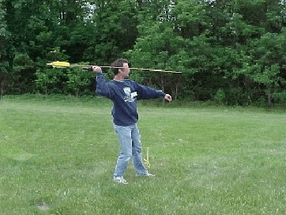
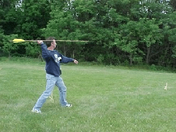
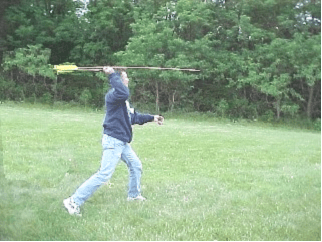
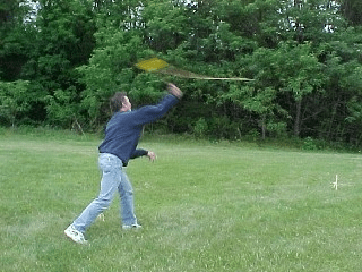
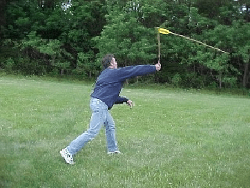
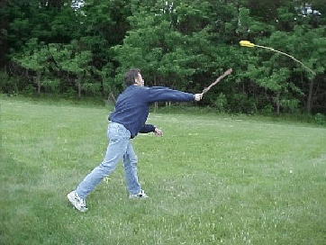
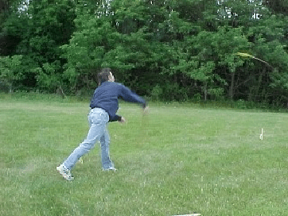

Throwing Atlatl
How to throw with an atlatl
Overview
The throwing motion with an atlatl is the same as in throwing a ball or rock. The main difference is that when you snap your wrist at the end of a pitch, your wrist provides a short lever arm, while the same snap of the wrist while holding an atlatl gives you a long lever, like adding another arm joint.
To throw with an atlatl, grasp the atlatl firmly and set the the hook in the hollow nock on the end of the dart. Raise your index finger and thumb to hold the dart in place, or rest it on the forked dart rest used on some modern atlatls. I describe the throw as going through 4 phases. The motion should be smooth and comfortable, as normal as throwing a snowball.
From a balanced aiming posture, a throw begins with:
1. a step, then
2. the body rotates and the arm and shoulder begin to move the atlatl and dart
3. the wrist snaps to provide the leverage of the atlatl, and
4. you follow through.
[separator]
How to Throw in Detail
1) The step.
I start with a standing posture, feet close together, and left foot forward, leaning back very slightly with my arm cocked back, body turned not quite 90 degrees from target so that my left arm can be raised and pointed at it. The dart is level or a bit above horizontal, at or above eye level depending on range. I visually align it with the target, even though I can’t actually sight down it like a gun barrel.

1a. The Step

1b. the Step
The throw begins visibly with a slight bend of the left knee as I rock back fractionally (first photo), then bring the left foot forward in a full step, which brings body, arm, and dart forward, but without moving arm or rotating torso until the full step is complete, with the left foot flat or almost on the ground.
_____________________
2) Arm and body.
As the step is completed, the torso begins to rotate and the upper arm to flex at the shoulder, bringing the hand and the atlatl forward until it is about even with the back of the head.
The atlatl throughout this remains horizontal. The shoulder flexion seems to me to be small at this point, and the wrist must be rotating to keep the dart pointed at the target.

2. Arm and Body
_____________________
3) The Wrist Snap.
Slightly before the hand reaches the back of the head, the hand and forearm begin to rise.
Then as the hand passes the head, give a vigorous snap of the wrist, swinging the atlatl up to vertical and flicking the dart away. The dart will flex as the point remains aimed at target, while the nock is rapidly raised by the atlatl.

3. The Wrist Snap – the hand passes the head.
At the same time, the arm is extended straight out. [The wrist motion seems essentially the same as that in cocking and throwing a ball, with the only real difference being that the fingers remain closed to grip the atlatl.] Note how high above the head the dart is as it is just about to leave the atlatl.

3. The Wrist Snap – extended arm
With the atlatl in vertical position, the dart has recovered from its initial flexing, and is about to fly away from the atlatl while flexing in the opposite direction.

_____________________
4) Follow-through.
As the dart leaves the atlatl with the atlatl vertical or slightly past, continue the throw with a nice easy follow-through. I lean slightly forward and swing the right arm and atlatl down and across my body, ending outside my left leg.

4. Follow-through
My chin remains up, and my head at almost the same level throughout the throw, with my eyes fixed on the target. This is conscious “good form – if you drop your shoulder, bend over, or start with your arm low, the dart will go low.
